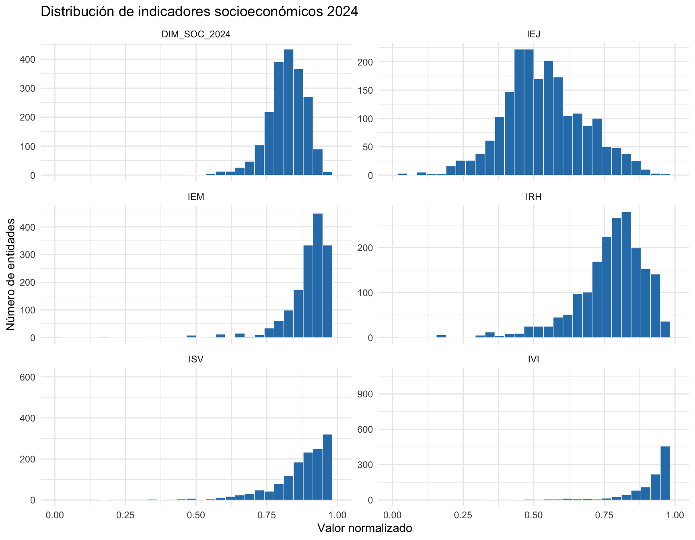
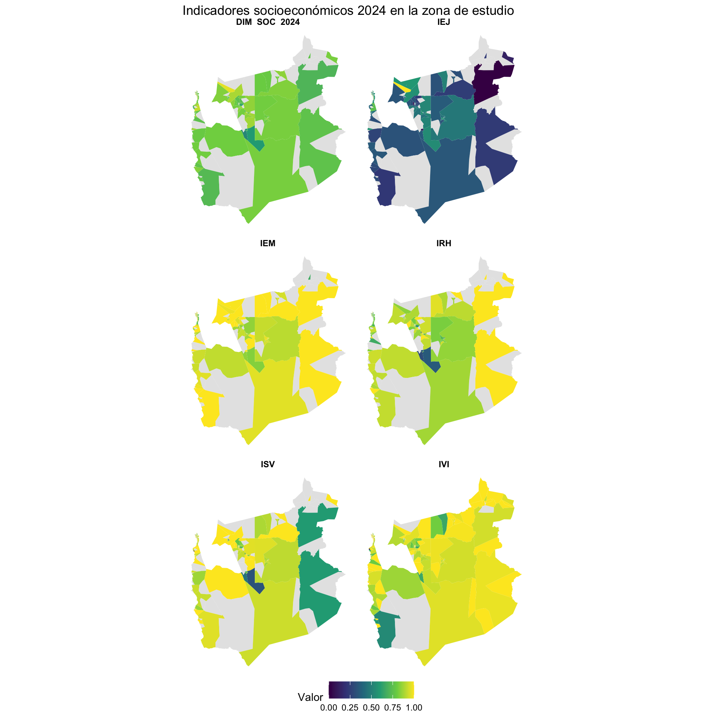

Code
library(sf)
library(dplyr)
library(tidyr)
library(ggplot2)
library(knitr)Construcción territorial a escala de manzana y entidad
Este documento presenta la construcción de indicadores socioeconómicos territoriales con información agregada del Censo 2024. El flujo de trabajo transforma variables censales en cinco indicadores a escala de manzana o entidad, homologa su dirección —un valor alto representa una situación relativamente más favorable— y los integra en una dimensión socioeconómica sintética.
Los objetivos específicos son:
Los indicadores ISV, IEJ e IRH utilizan definiciones operacionales ajustadas a las variables agregadas disponibles. Deben interpretarse como proxies y validarse conceptualmente antes de emplearlos en decisiones de política pública.
El documento es autocontenido: las funciones auxiliares necesarias se definen en los bloques siguientes y no dependen de scripts externos.
library(sf)
library(dplyr)
library(tidyr)
library(ggplot2)
library(knitr)assert_has_vars <- function(datos, variables, origen = "datos") {
faltantes <- setdiff(variables, names(datos))
if (length(faltantes) > 0) {
stop(
"Faltan variables en ", origen, ": ",
paste(faltantes, collapse = ", "),
call. = FALSE
)
}
invisible(TRUE)
}
proporcion_segura <- function(numerador, denominador) {
if_else(
!is.na(denominador) & denominador > 0,
numerador / denominador,
NA_real_
)
}
acotar_01 <- function(x) {
pmin(pmax(x, 0), 1)
}
minmax <- function(x) {
rango <- range(x, na.rm = TRUE)
if (!all(is.finite(rango)) || diff(rango) == 0) {
return(rep(NA_real_, length(x)))
}
(x - rango[1]) / diff(rango)
}El insumo nacional contiene geometrías censales y variables agregadas de personas, hogares y viviendas. La ruta se declara una sola vez para facilitar su adaptación a otra instalación del proyecto.
path_censo_2024 <- "../sesiones/data/censo-2024/censo_2024_nacional.gpkg"
if (!file.exists(path_censo_2024)) {
stop("No se encontró el insumo 2024 en: ", path_censo_2024)
}
data_nac <- st_read(path_censo_2024, quiet = TRUE)El ejemplo considera la Región de Tarapacá (01) y las comunas de Iquique, Pica y Pozo Almonte. La selección se mantiene explícita para que el mismo flujo pueda reutilizarse con otra región o conjunto de comunas.
reg <- "01"
comunas <- c("IQUIQUE", "PICA", "POZO ALMONTE")
data_reg <- data_nac %>%
filter(COD_REGION == reg, COMUNA %in% comunas)
if (nrow(data_reg) == 0) {
stop("La selección territorial no contiene registros.")
}
cat("Registros 2024 en la zona de estudio:", nrow(data_reg), "\n")Registros 2024 en la zona de estudio: 2819 El campo w distribuye los conteos de una manzana entre sus entidades asociadas. La ponderación se aplica únicamente a variables absolutas. prom_escolaridad18 ya es un promedio y, por tanto, no debe multiplicarse por w.
vars_conteo <- c(
"n_per", "n_vp", "n_desocupado", "n_ocupado",
"n_mat_paredes_tabique_sin_forro",
"n_mat_paredes_artesanal",
"n_mat_paredes_precarios",
"n_mat_techo_fonolita",
"n_mat_techo_precarios",
"n_mat_techo_sin_cubierta",
"n_mat_piso_capa_cemento",
"n_mat_piso_tierra",
"n_viv_hacinadas",
"n_vp_ocupada",
"n_nucleos_hacinados_allegados",
"n_hog",
"n_jefatura_mujer",
"n_hog_menores"
)
vars_requeridas <- c(
"ID_MANZ", "ID_MANZCIT", "MANZENT", "TIPO_MZ",
"COD_REGION", "COMUNA", "n_buildings", "w",
"prom_escolaridad18", vars_conteo
)
assert_has_vars(data_reg, vars_requeridas, "data_reg")
if (any(is.na(data_reg$w) | data_reg$w <= 0)) {
stop("El factor w contiene valores faltantes o no positivos.")
}
censo <- data_reg %>%
transmute(
ID_MANZ,
ID_MANZCIT,
MANZENT,
TIPO_MZ,
COD_REGION,
COMUNA,
n_buildings,
w,
prom_escolaridad18,
across(all_of(vars_conteo), ~ .x * w)
)Cuando un indicador es una razón, aplicar el mismo w al numerador y al denominador no modifica su valor. La ponderación conserva, en cambio, la coherencia de los conteos distribuidos. Por sí sola no crea variación socioeconómica dentro de una manzana: las entidades derivadas de una misma manzana comparten sus proporciones.
La tabla resume la definición y dirección de las cinco medidas.
| Indicador | Dimensión aproximada | Interpretación de un valor alto |
|---|---|---|
IEM |
empleo | menor proporción de población activa desocupada |
IVI |
materialidad de la vivienda | menor proporción de materialidad insuficiente |
ISV |
suficiencia de la vivienda | menor hacinamiento relativo |
IEJ |
escolaridad de población adulta | mayor escolaridad promedio |
IRH |
estructura de hogares | menor intensidad del proxy utilizado |
El IEM se construye a partir de la proporción de personas desocupadas respecto de la población activa. La inversión aditiva orienta el resultado para que los valores altos representen una mejor situación relativa.
\[ CESA = \frac{n_{desocupado}}{n_{desocupado} + n_{ocupado}} \]
\[ IEM = 1 - CESA \]
Si no hay población activa, el indicador no está definido y se registra como NA.
censo <- censo %>%
mutate(
CESA_DENS = proporcion_segura(
n_desocupado,
n_desocupado + n_ocupado
),
IEM = 1 - acotar_01(CESA_DENS)
)El IVI sintetiza carencias de materialidad en paredes, techo y piso. Cada componente se calcula sobre el total de viviendas particulares y se acota al intervalo \([0,1]\) para controlar inconsistencias de agregación.
\[ paredes = \frac{tabique\_sin\_forro + artesanal + precarios}{n_{vp}} \]
\[ techo = \frac{fonolita + techo\_precario + sin\_cubierta}{n_{vp}} \]
\[ suelo = \frac{capa\_cemento + tierra}{n_{vp}} \]
\[ IVI = 1 - \frac{paredes + techo + suelo}{3} \]
censo <- censo %>%
mutate(
paredes = proporcion_segura(
n_mat_paredes_tabique_sin_forro +
n_mat_paredes_artesanal +
n_mat_paredes_precarios,
n_vp
),
techo = proporcion_segura(
n_mat_techo_fonolita +
n_mat_techo_precarios +
n_mat_techo_sin_cubierta,
n_vp
),
suelo = proporcion_segura(
n_mat_piso_capa_cemento + n_mat_piso_tierra,
n_vp
),
across(c(paredes, techo, suelo), acotar_01),
IVI = 1 - rowMeans(pick(paredes, techo, suelo), na.rm = FALSE)
)El ISV combina dos señales: viviendas hacinadas y núcleos hacinados o allegados. El segundo término recibe un peso de criticidad \(w_{hac}=2\). El puntaje se normaliza dentro de la zona de estudio y luego se invierte.
\[ score_{ISV} = \frac{n_{viv\_hacinadas}}{n_{vp\_ocupada}} + w_{hac}\frac{n_{nucleos\_hacinados\_allegados}}{n_{hog}} \]
\[ ISV = 1 - minmax(score_{ISV}) \]
w_hac <- 2
censo <- censo %>%
mutate(
prop_viv_hacinadas = proporcion_segura(
n_viv_hacinadas,
n_vp_ocupada
),
prop_nucleos_hacinados = proporcion_segura(
n_nucleos_hacinados_allegados,
n_hog
),
score_isv = prop_viv_hacinadas + w_hac * prop_nucleos_hacinados,
ISV = 1 - minmax(score_isv)
)La normalización min–max depende de los extremos observados en las comunas seleccionadas. Si cambia la zona de estudio, puede cambiar el valor del ISV aunque los datos de una entidad permanezcan iguales.
El IEJ utiliza el promedio de escolaridad de la población de 18 años o más disponible en el insumo agregado. Se registra como faltante cuando la entidad no tiene población.
\[ IEJ = prom_{escolaridad18}, \qquad n_{per} > 0 \]
censo <- censo %>%
mutate(
IEJ = if_else(n_per > 0, prom_escolaridad18, NA_real_)
)El IRH aproxima la intersección entre la proporción de jefaturas femeninas y la proporción de hogares con menores. La forma multiplicativa evita tratar ambas señales como componentes aditivos.
\[ V_{fam} = \left(\frac{n_{jefatura\_mujer}}{n_{hog}}\right) \left(\frac{n_{hog\_menores}}{n_{hog}}\right) \]
\[ IRH = 1 - V_{fam} \]
censo <- censo %>%
mutate(
prop_jefatura_mujer = proporcion_segura(n_jefatura_mujer, n_hog),
prop_hog_menores = proporcion_segura(n_hog_menores, n_hog),
score_irh = acotar_01(prop_jefatura_mujer) *
acotar_01(prop_hog_menores),
IRH = 1 - score_irh
)Este proxy no observa directamente monoparentalidad, redes de apoyo, ingresos ni capacidad de cuidado. La jefatura femenina no constituye por sí misma una carencia. Por ello, el resultado no debe utilizarse para caracterizar hogares individuales ni para estigmatizar tipos de familia.
Para integrar los indicadores, primero normalizamos cada uno al intervalo \([0,1]\). La dimensión final es el promedio simple de las cinco medidas normalizadas y solo se calcula cuando todas están disponibles.
indicadores <- c("IEM", "IVI", "ISV", "IEJ", "IRH")
indicadores_n <- paste0(indicadores, "_n")
sf24 <- censo %>%
mutate(
across(
all_of(indicadores),
minmax,
.names = "{.col}_n"
),
n_indicadores_validos = rowSums(!is.na(pick(all_of(indicadores_n)))),
DIM_SOC_2024 = rowMeans(pick(all_of(indicadores_n)), na.rm = TRUE),
DIM_SOC_2024 = if_else(
n_indicadores_validos == length(indicadores_n),
DIM_SOC_2024,
NA_real_
)
) %>%
st_make_valid() %>%
select(
ID_MANZ,
ID_MANZCIT,
MANZENT,
TIPO_MZ,
COD_REGION,
COMUNA,
n_buildings,
w,
all_of(indicadores),
all_of(indicadores_n),
DIM_SOC_2024
)resumen_indicadores <- sf24 %>%
st_drop_geometry() %>%
select(all_of(indicadores), DIM_SOC_2024) %>%
pivot_longer(
cols = everything(),
names_to = "indicador",
values_to = "valor"
) %>%
group_by(indicador) %>%
summarise(
n_validos = sum(!is.na(valor)),
pct_faltantes = mean(is.na(valor)) * 100,
minimo = min(valor, na.rm = TRUE),
p25 = quantile(valor, 0.25, na.rm = TRUE),
mediana = median(valor, na.rm = TRUE),
media = mean(valor, na.rm = TRUE),
p75 = quantile(valor, 0.75, na.rm = TRUE),
maximo = max(valor, na.rm = TRUE),
.groups = "drop"
)
kable(
resumen_indicadores,
digits = 3,
caption = "Cobertura y distribución de los indicadores socioeconómicos 2024"
)| indicador | n_validos | pct_faltantes | minimo | p25 | mediana | media | p75 | maximo |
|---|---|---|---|---|---|---|---|---|
| DIM_SOC_2024 | 1996 | 29.195 | 0.495 | 0.783 | 0.824 | 0.820 | 0.869 | 0.989 |
| IEJ | 1998 | 29.124 | 6.200 | 11.200 | 12.100 | 12.211 | 13.275 | 17.400 |
| IEM | 1998 | 29.124 | 0.000 | 0.889 | 0.931 | 0.918 | 0.975 | 1.000 |
| IRH | 1996 | 29.195 | 0.250 | 0.793 | 0.850 | 0.839 | 0.900 | 1.000 |
| ISV | 1996 | 29.195 | 0.000 | 0.867 | 0.939 | 0.908 | 1.000 | 1.000 |
| IVI | 2087 | 25.967 | 0.333 | 0.963 | 0.989 | 0.969 | 1.000 | 1.000 |
datos_distribucion <- sf24 %>%
st_drop_geometry() %>%
select(all_of(indicadores_n), DIM_SOC_2024) %>%
pivot_longer(
cols = everything(),
names_to = "indicador",
values_to = "valor"
) %>%
mutate(indicador = sub("_n$", "", indicador))
ggplot(datos_distribucion, aes(x = valor)) +
geom_histogram(
bins = 30,
fill = "#2C7FB8",
color = "white",
linewidth = 0.2
) +
facet_wrap(~ indicador, ncol = 2, scales = "free_y") +
scale_x_continuous(limits = c(0, 1)) +
labs(
title = "Distribución de indicadores socioeconómicos 2024",
x = "Valor normalizado",
y = "Número de entidades"
) +
theme_minimal()
datos_mapa <- sf24 %>%
select(all_of(indicadores_n), DIM_SOC_2024) %>%
pivot_longer(
cols = c(all_of(indicadores_n), DIM_SOC_2024),
names_to = "indicador",
values_to = "valor"
) %>%
mutate(indicador = sub("_n$", "", indicador))
ggplot(datos_mapa) +
geom_sf(aes(fill = valor), color = NA) +
facet_wrap(~ indicador, ncol = 2) +
scale_fill_viridis_c(
limits = c(0, 1),
na.value = "grey90",
name = "Valor"
) +
labs(title = "Indicadores socioeconómicos 2024 en la zona de estudio") +
theme_void() +
theme(
strip.text = element_text(face = "bold"),
legend.position = "bottom"
)
Comprobamos que los indicadores normalizados y la dimensión sintética permanezcan dentro del intervalo esperado.
variables_01 <- c(indicadores_n, "DIM_SOC_2024")
fuera_de_rango <- sf24 %>%
st_drop_geometry() %>%
summarise(
across(
all_of(variables_01),
~ sum(.x < 0 | .x > 1, na.rm = TRUE)
)
) %>%
pivot_longer(
everything(),
names_to = "variable",
values_to = "n_fuera_de_rango"
)
kable(
fuera_de_rango,
caption = "Valores fuera del intervalo [0, 1]"
)| variable | n_fuera_de_rango |
|---|---|
| IEM_n | 0 |
| IVI_n | 0 |
| ISV_n | 0 |
| IEJ_n | 0 |
| IRH_n | 0 |
| DIM_SOC_2024 | 0 |
stopifnot(all(fuera_de_rango$n_fuera_de_rango == 0))La salida recomendada es GeoPackage, porque conserva la geometría, los nombres de campos y los tipos de datos en un único archivo.
path_resultados <- "data/censo-2024/resultados"
dir.create(path_resultados, recursive = TRUE, showWarnings = FALSE)
st_write(
sf24,
file.path(path_resultados, "indicadores_socioeconomicos_2024.gpkg"),
delete_dsn = TRUE
)
saveRDS(
sf24,
file.path(path_resultados, "indicadores_socioeconomicos_2024.rds")
)La base resultante contiene cinco indicadores simples, sus versiones normalizadas y una dimensión socioeconómica integrada. Su uso debe considerar cuatro límites:
ISV, IEJ e IRH aproximan conceptos que no están observados de forma directa en las variables agregadas.Estas restricciones forman parte del indicador y deben acompañar cualquier mapa, tabla o análisis derivado.